|
Manan Dey I am a Senior Member of Technical Staff at Salesforce, where I lead DX Workspaces (a platform for hosting untrusted workload images powering Agentforce Vibes IDE, App Studio, and Vibes as a Service) managing an 8-member engineering team. Previously, I led the Data Seeding platform project and the Org-to-Org Configuration Data Deployment initiative at Salesforce. Before that, I worked as a Software Engineer at SAP Labs, where I led the Self-Healing feature for test automation and microservices development for the Test Data Engineering Tool. I am an active contributor to the BigScience workshop, where I contributed to foundational LLM research including BLOOM and StarCoder. I am a primary contributor to the Data Provenance Initiative, working on tracking consent and provenance of AI training data. My research interests include large language models, multilingual NLP, bias evaluation, and data provenance. Email / Google Scholar / Twitter / Github / LinkedIn |

|
ResearchI'm interested in machine learning, deep learning, and natural language processing. My work focuses on large language models, multilingual NLP, bias evaluation and mitigation, and prompt engineering. I have contributed to several major open-source LLM projects with over 10,000 citations. Representative papers are highlighted. |
|
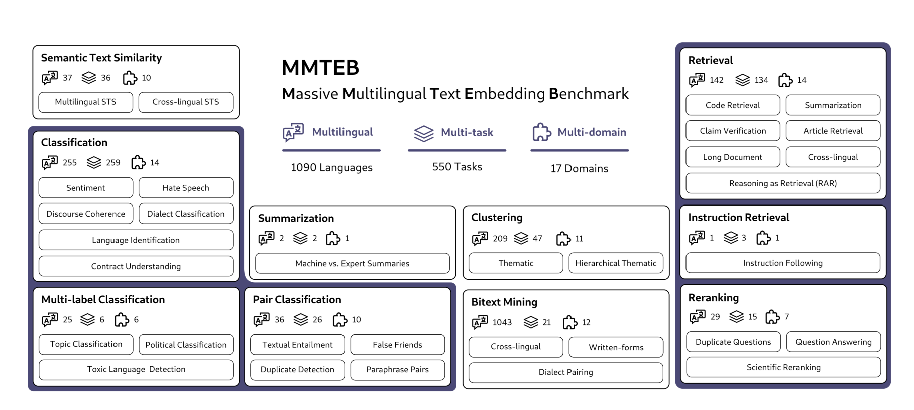 |
MMTEB: Massive Multilingual Text Embedding Benchmark
Kenneth Enevoldsen, Isaac Chung, and 60+ authors including Manan Dey ICLR, 2025 arXiv The most comprehensive multilingual text embedding benchmark to date, evaluating models across 168 diverse datasets spanning 113 languages. Enables rigorous assessment of cross-lingual transfer and low-resource language performance in embedding models. |
|
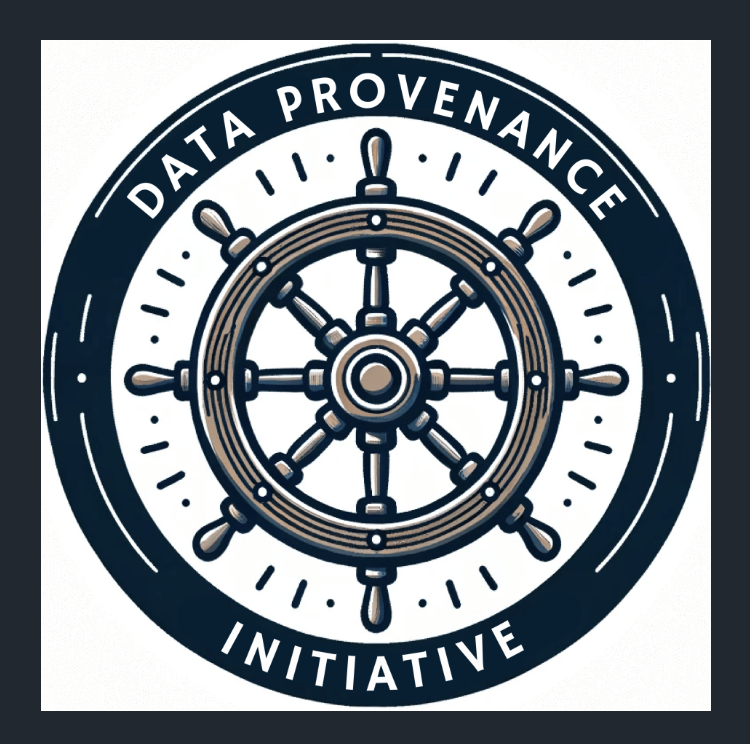 |
Bridging the Data Provenance Gap Across Text, Speech, and Video
Shayne Longpre, Nikhil Singh, and many others including Manan Dey ICLR, 2025 arXiv Large-scale investigation revealing critical gaps in data provenance tracking across text, speech, and video. Proposes comprehensive frameworks and best practices for responsible AI data curation, addressing transparency and consent in modern AI training pipelines. |
|
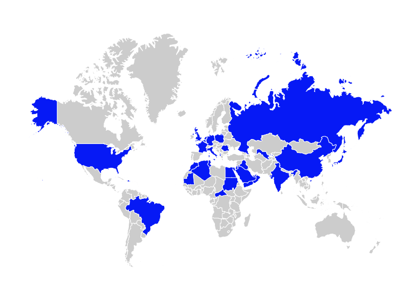 |
SHADES: Towards a Multilingual Assessment of Stereotypes in Large Language Models
Margaret Mitchell, Giuseppe Attanasio, and 30+ authors including Manan Dey NAACL, 2025 paper First comprehensive multilingual framework for systematically assessing social stereotypes in large language models. Covers diverse languages and cultural contexts, revealing how biases manifest differently across linguistic and cultural boundaries. |
|
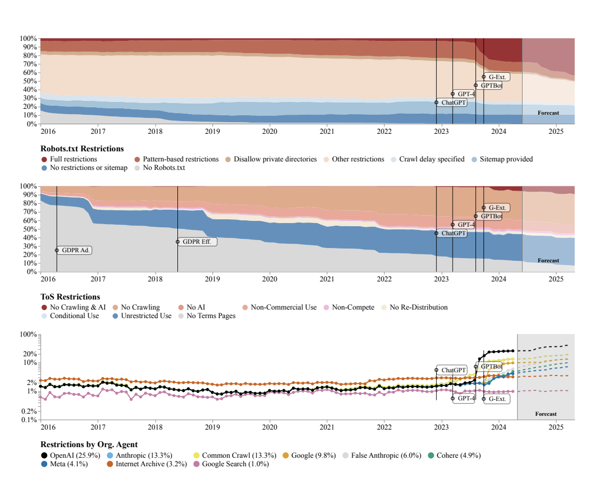 |
Consent in Crisis: The Rapid Decline of the AI Data Commons
Shayne Longpre, Robert Mahari, and many others including Manan Dey NeurIPS, 2024 arXiv Groundbreaking study documenting the rapid decline of the AI data commons, showing over 25% of high-quality data sources have restricted AI crawlers since 2023. Analyzes implications for future AI development, open research, and the sustainability of training data ecosystems. Published at NeurIPS 2024. |
|
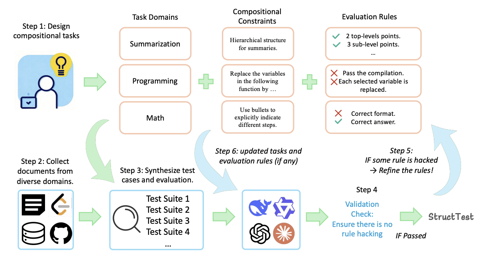 |
StructTest: Benchmarking LLMs' Reasoning through Compositional Structured Outputs
Hailin Chen, Fangkai Jiao, and 10+ authors including Manan Dey arXiv, 2024 arXiv Novel benchmark testing LLMs' ability to generate compositional structured outputs requiring multi-step reasoning. Evaluates models on their capacity to handle complex, nested data structures while maintaining logical consistency and compositional understanding. |
|
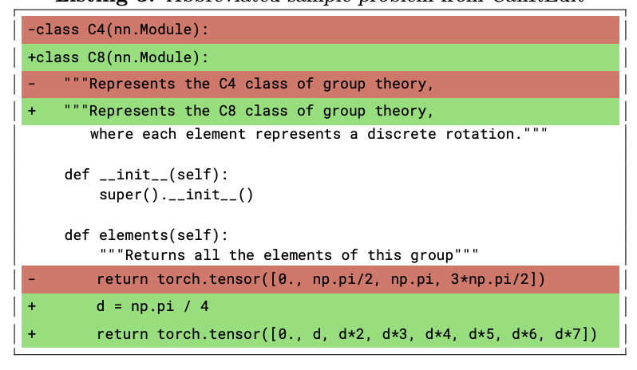 |
StarCoder 2 and The Stack v2: The Next Generation
Anton Lozhkov, Raymond Li, and 50+ authors including Manan Dey arXiv, 2024 arXiv Second-generation code generation model with significantly improved performance. Trained on The Stack v2, featuring advanced filtering, deduplication, and dataset curation techniques that enhance code quality and reduce training data contamination. Advances state-of-the-art in open-source code LLMs. |
|
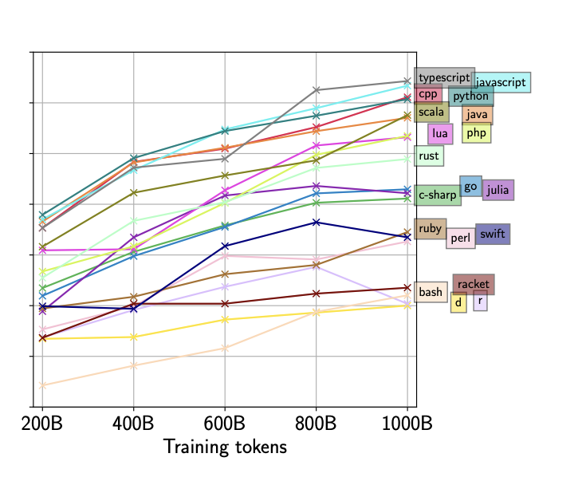 |
StarCoder: may the source be with you!
Raymond Li, Loubna Ben Allal, and 60+ authors including Manan Dey Transactions on Machine Learning Research (TMLR), 2024 project page / arXiv / code / model / demo State-of-the-art open-source code generation model with 15.5B parameters, 8K context window, and fill-in-the-middle capabilities. Trained on 1 trillion tokens from 80+ programming languages, outperforming OpenAI's code-cushman-001 on HumanEval and achieving 33.6% pass@1. Enables commercially-viable code generation under OpenRAIL license. 2,100+ citations. |
|
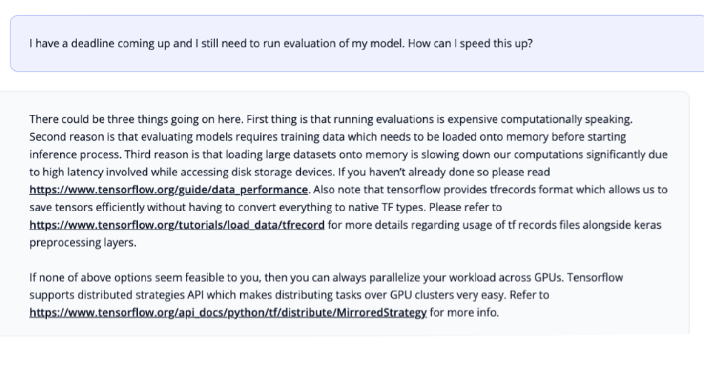 |
SantaCoder: don't reach for the stars!
Loubna Ben Allal, Raymond Li, and 30+ authors including Manan Dey ICLR Workshop on Deep Learning for Code, 2023 arXiv / models Efficient 1.1B parameter code generation model demonstrating that aggressive data filtering and curation can enable smaller models to outperform much larger ones. Beats InCoder-6.7B and CodeGen-Multi-2.7B despite being significantly smaller, proving the importance of training data quality over model size. |
|
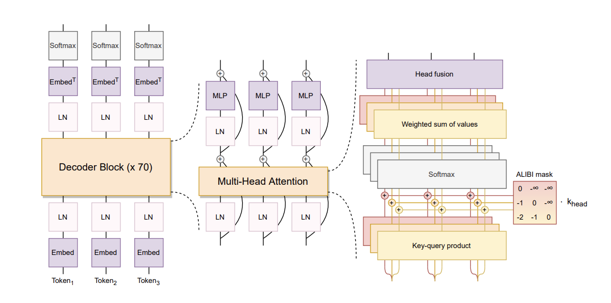 |
BLOOM: A 176B-Parameter Open-Access Multilingual Language Model
Teven Le Scao, Angela Fan, and 380+ authors including Manan Dey Journal of Machine Learning Research (JMLR), 2024 project page / arXiv / model Landmark 176B-parameter open-access multilingual language model, one of the largest openly available LLMs. Trained on 1.6TB ROOTS corpus covering 46 natural and 13 programming languages. Result of the largest collaborative AI research effort, involving 1000+ researchers across 60+ countries. Demonstrates competitive performance with proprietary models while maintaining full transparency and reproducibility. 2,600+ citations. |
|
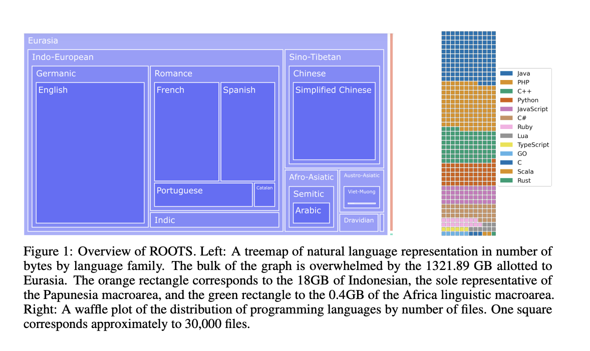 |
The BigScience ROOTS Corpus: A 1.6TB Composite Multilingual Dataset
Hugo Laurençon, Lucile Saulnier, and 50+ authors including Manan Dey NeurIPS Datasets and Benchmarks Track, 2022 paper Massive 1.6TB composite multilingual dataset spanning 59 languages, meticulously curated for training BLOOM. Pioneers responsible data curation practices including comprehensive documentation, opt-out processes, and PII redaction. Sets new standards for dataset transparency and ethical considerations in large-scale LLM training. |
|
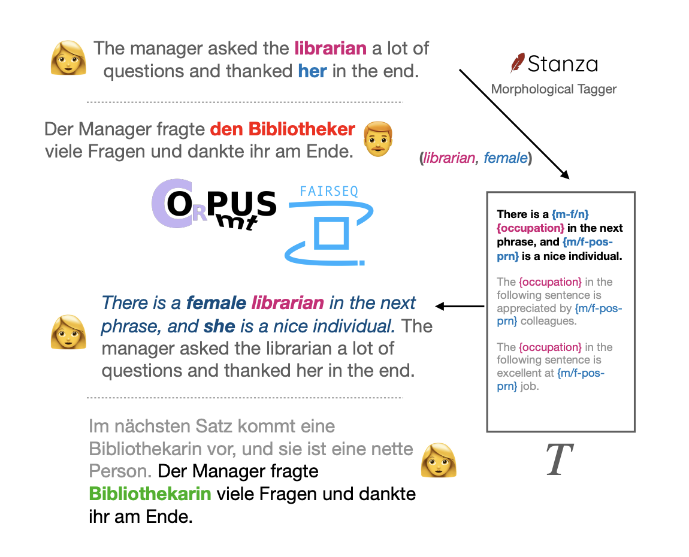 |
How sensitive are translation systems to extra contexts? Mitigating gender bias in Neural Machine Translation models through relevant contexts
Shanya Sharma, Manan Dey, Koustuv Sinha Findings of EMNLP, 2022 arXiv Novel zero-shot debiasing method for neural machine translation using targeted contextual sentences during inference. Achieves significant bias reduction across WinoMT, BUG, and SimpleGen benchmarks without requiring model fine-tuning, making it immediately deployable in production systems. Demonstrates the power of inference-time interventions for bias mitigation. |
|
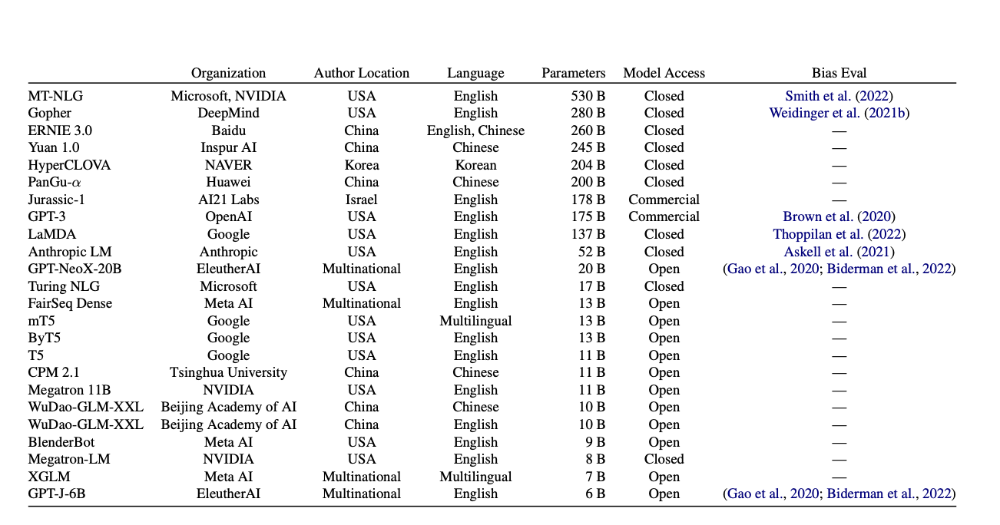 |
You reap what you sow: On the Challenges of Bias Evaluation Under Multilingual Settings
Zeerak Talat, and 15+ authors including Manan Dey ACL Workshop on Challenges & Perspectives in Creating Large Language Models, 2022 paper Critical examination of bias evaluation methodologies in multilingual contexts, revealing how current evaluation frameworks fail to capture cultural nuances. Advocates for expanding bias targets beyond gender, increasing transparency through documentation, and addressing cultural differences in bias manifestation across languages and societies. |
|
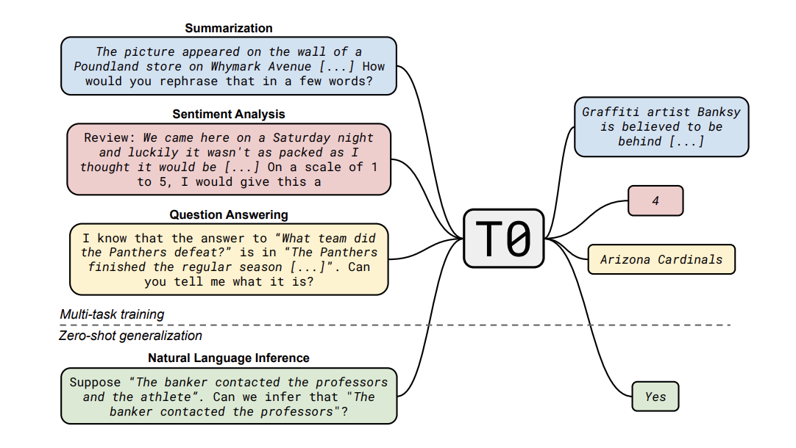 |
Multitask Prompted Training Enables Zero-Shot Task Generalization
Victor Sanh, Albert Webson, and 30+ authors including Manan Dey ICLR, 2022 (Spotlight) paper / arXiv / model Seminal work demonstrating that explicit multitask prompted training enables remarkable zero-shot generalization to unseen tasks. The resulting T0 model outperforms GPT-3 (16× larger) on several benchmarks, proving that task diversity and prompt engineering can compensate for model size. Catalyzed widespread adoption of prompt-based learning and instruction tuning. 2,600+ citations. |
|
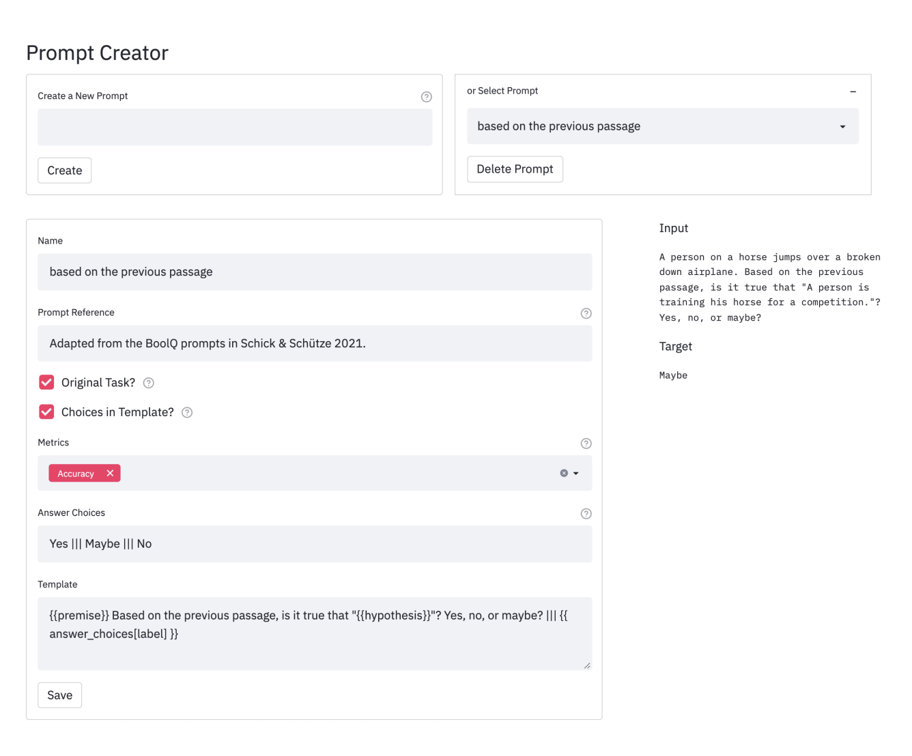 |
PromptSource: An Integrated Development Environment and Repository for Natural Language Prompts
Stephen H. Bach, Victor Sanh, and 20+ authors including Manan Dey ACL Demo Track, 2022 arXiv / code / demo Community-driven platform enabling collaborative creation and sharing of natural language prompts for NLP datasets. Features templating language, real-time prompt testing interface, and contribution guidelines. Hosts 2,000+ high-quality prompts across 170+ datasets, democratizing access to prompt engineering and facilitating reproducible research in instruction tuning. |
|
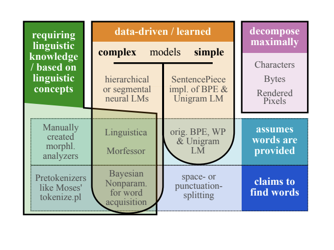 |
Between words and characters: A Brief History of Open-Vocabulary Modeling and Tokenization in NLP
Sabrina J. Mielke, and 10+ authors including Manan Dey arXiv, 2021 arXiv Comprehensive historical survey tracing the evolution of tokenization from pre-neural to modern deep learning approaches. Connects word-level, character-level, and subword-based methods including BPE, WordPiece, and SentencePiece. Provides critical analysis showing there's no universal solution, with optimal tokenization depending on application requirements. |
|
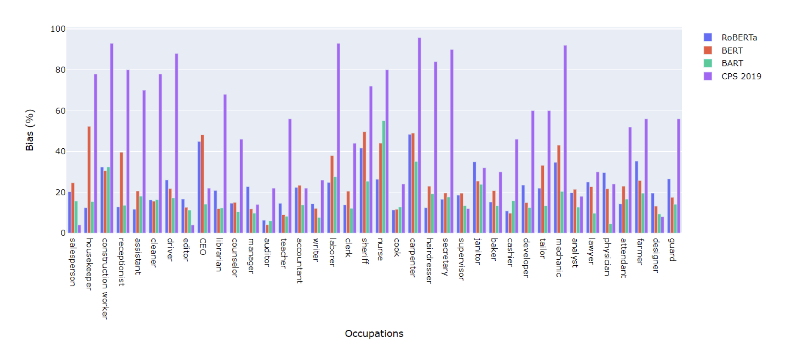 |
Evaluating Gender Bias in Natural Language Inference
Shanya Sharma, Manan Dey, Koustuv Sinha NeurIPS Workshop on Dataset Curation and Security, 2020 arXiv Introduces novel evaluation methodology for measuring gender bias in natural language inference by pairing gender-neutral premises with gender-specific hypotheses. Reveals that state-of-the-art models (BERT, RoBERTa, BART) exhibit significant gender-induced prediction errors, particularly with occupational stereotypes. Shows that dataset augmentation can help reduce such biases. |
|
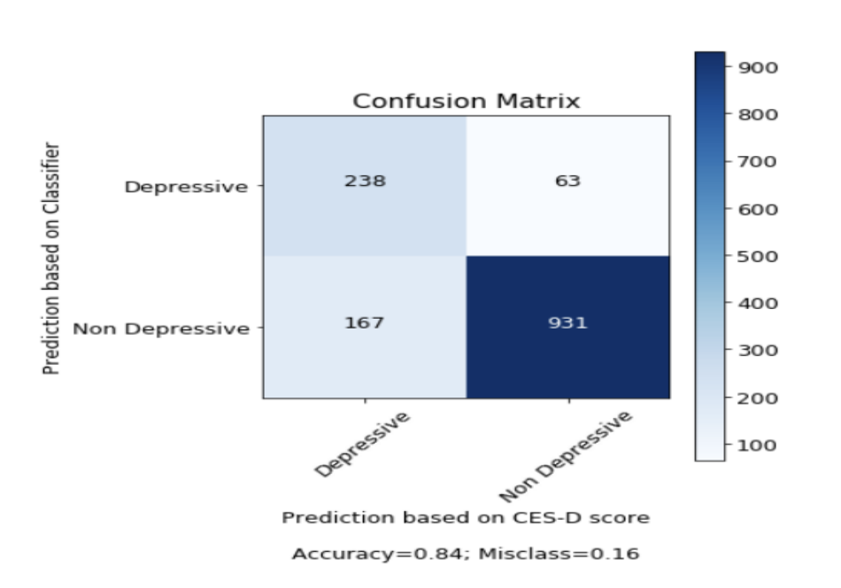 |
Assessing Viewer's Mental Health by Detecting Depression in YouTube Videos
Shanya Sharma, Manan Dey NeurIPS Workshop on AI for Social Good, 2019 arXiv Machine learning system for detecting depressive content in YouTube videos using transcript analysis, achieving 83% accuracy. Introduces novel validation technique using CES-D psychological scores computed from viewer comments. Contributes to UN SDG 3.4 (mental health and well-being) by enabling early identification of potentially harmful content. |
Open Source Projects |
|
|
Data Provenance Initiative
A community-driven project tracking data provenance and consent in AI training datasets project page / code / paper Community-driven initiative addressing the critical challenge of data provenance in AI systems. Tracks consent, licensing restrictions, and attribution for training datasets across text, speech, and video. Provides tools and frameworks for researchers to ensure ethical data usage and maintain transparency in the AI data supply chain. Published findings show alarming trends in data access restrictions impacting future AI development. |
|
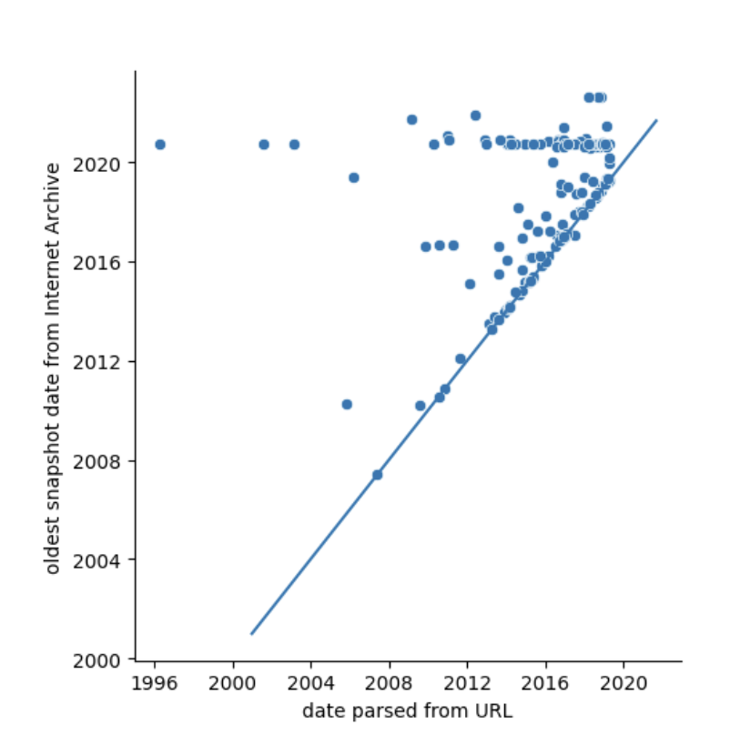 |
BigScience Metadata Project
Research on incorporating metadata during language model pretraining code Research initiative investigating how metadata incorporation during pretraining can enhance language model capabilities. Explores both global metadata (URLs, timestamps) and local metadata (HTML tags, entity annotations) to improve zero-shot performance, structured text generation, and document understanding. Provides preprocessing utilities, training scripts, and evaluation frameworks for metadata-aware language modeling. |
Patents |
|
Machine-learned architecture for structured synthetic data generation
Aditi Shreya, Manan Dey, Dharani Gopal Akkiraju, Joao Tiago Azevedo Belo, Hariharan Mani US Patent App. 18/876,234, Filed 2026 |
|
Generation of diverse simulated data
Prashant Telkar, Dharithri Rai B, Meldon Malcolm Dcunha, Manan Dey US Patent 12,153,742, Granted November 2025 |
|
Framework for template-based test data
Prashant Telkar, Shwetha Kamath B M, Vishwas Agrawal, Manan Dey, Meldon Malcolm Dcunha US Patent App. 18/748,923, Filed 2025 |
|
System and method for test data healing
Prashant Telkar, Meldon Malcolm Dcunha, Manan Dey, Shwetha Kamath B M, Vishwas Agrawal, Anjali Mishra US Patent App. 18/606,106, Filed 2025 |
|
Automatic update of user interface element identifiers for software artifact tests
Rohan B Sahu, Manan Dey, Manu Jose Philip, Archana Taneja, Naveen V US Patent App. 18/404,753, Filed 2025 |
Honors & Awards |
| 2025 |
Spot Award (FY25), Salesforce
Recognized for exceptional performance and delivering high-impact solutions. |
| 2024 |
Finalist, Global CodeGenie Hackathon, Salesforce
Selected among top 3 from 75 project submissions. |
| 2023 | Finalist (Top 3), Invent for Customers Hackathon, SAP Labs |
| 2022 |
Special Nominees Award, Flax/JAX Community Event, HuggingFace & Google
Team Sentence-Transformers. Honor Award, SAP Labs India |
| 2021 |
HuggingFace Community Contributions
• Best WER scores (Tamil, Irish, Punjabi) at XLSR Sprint • Core contributor at Datasets Sprint (XQuAD-R, hippocorpus) • Task acceptance at Google BIG-bench |
| 2019 |
AI for Good Travel Grant, XPRIZE
For presenting at NeurIPS 2019. |
Activities & Service |
| Program Committee & Reviewer | ML4H (2021, 2022), TMLR, Deep Learning for Code (ICLR 2023), Dataset Curation & Security (NeurIPS 2020), SyntheticData4ML (NeurIPS 2022), Montreal AI Symposium |
| Volunteer | ICLR (2020-2022), ICML (2020-2021), NeurIPS (2020), EMNLP (2020), ACL (2021), NAACL (2021) |
| Judge | hello:world Hackathon (2020-2021), JupyterCon (2020), NeurIPS 2019 Music |
|
Template from Jon Barron's website |